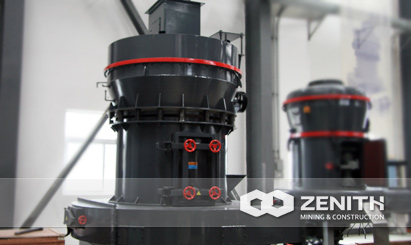
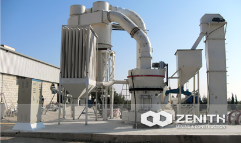
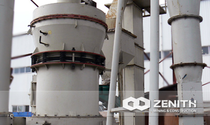
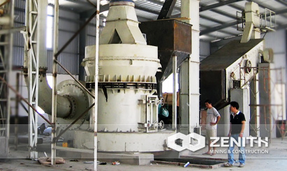

- 
- 
- 
- 
MTM Medium Speed Trapezium Mill
Zenith's MTM Trapezium Mill is a world leading industrial mill. Based on years' research and exploration, it adopts the world leading technology. It has overcome the traditional mills defect completely in aspects of application, capacity, fineness, energy consumption, service life, etc. Zenith's MTM Series Trapezium Mill employs many advantages from the world, such as trapezium's working surface, flexible connection, roll linked pressure boost, etc.
Application of MTM Medium Speed Trapezium Mill
As an efficient stone grinding mill for rent and sale, MTM series trapezium mill is widely used in many industrial fields, such as building, chemical, chemical fertilizer, metallurgy, mining, nonmetal, abrasive, bearing materials, ceramic, steel, thermal power, bricks & tiles, coal industry, etc. It can grind these materials which are 9 or less on the Meshes scale, and moisture is below 6%, and they should be non-explosive and non-flammable mining materials. The final size can be adjusted from 30 to 400 meshes easily.
As for processing materials , Zenith's MTM Trapezium Mills are able to deal with the cement (raw meal and cement clinker), quartz, feldspar, calcite, gypsum, limestone, dolomite, graphite, fluorite, aedelforsite, phosphate ore, fused calcium-magnesium phosphate, car amide, electrolytic manganese metal, ferromanganese, coal, gangue, slag, zirconium, steatite, granite, orthoclase, marble, barites, ceramics, glass, etc.
MTM Medium Speed Trapezium Mill Benefits and advantages
- Smooth vibration-reduction design
- High density of vanes
- There is high-efficiency and energy-saving blower installed on our machine. The efficiency of prismatic blade equipped on the traditional machine is only 62%, but the efficiency of the energy saving blower, whose impeller and blade are both stamping, is 85%.
- The ladder-shaped rollers and rings improve the grinding efficiency greatly. The rollers and ring are designed in the main machine of an inverted trapezium, which control the material's slip velocity between rollers and rings. They can extend the grinding time, and enhance the crushing effect.
The tacnology data
| Name | MTM100 | MTM130 | MTM160 | |
|---|---|---|---|---|
| Ring roll number(pcs) | 4 | 5 | 6 | |
| Major diameter of roller(mm) | Φ310X170 | Φ410X210 | Φ440X270 | |
| Inner diameter of roller(mm) | Φ950X170 | Φ1280X210 | Φ1600X270 | |
| Revolving Speed(rmin) | 130 | 103 | 82 | |
| Max feed size(mm) | <25 | <30 | <35 | |
| Final size(mm) | 1.6-0.045 fineness can reach to 0.038 |
1.6-0.045 fineness can reach to 0.038 |
1.6-0.045 fineness can reach to 0.038 |
|
| Output(th) | 3-8 | 6-11 | 9-22 | |
| Complete physical size(mm) | 7100×5900×7900 | 9200×7250×9700 | 12550×5700×8355 | |
| Main unit motor | Model | Y225S-4 | Y280S-4 | Y315M-4 |
| Power(kw) | 37 | 75 | 132 | |
| Rotate speed(rmin) | 1480 | 1480 | 1480 | |
| Centrifugal induced draft fan motor | Model | Y225S-4 | Y280S-4 | Y315M-4 |
| Power(kw) | 37 | 75 | 132 | |
| Rotate speed(rmin) | 1480 | 1480 | 1480 | |
| Classifier speed regulating motor | Model | YCT200-4A | YCT200-4B | YCT250-4A |
| Power(kw) | 5.5 | 7.5 | 18.5 | |
| Rotate speed(rmin) | 125-1250 | 125-1250 | 132-1320 | |
| Elevator | Elevator model | TH210 | TH210 | TH315 |
| Motor model | Y100L2-4 | Y100L2-4 | Y112M-4 | |
| Power(kw) | 3 | 3 | 4 | |
| Rotate speed(rmin) | 1430 | 1430 | 1440 | |
| Jaw Crusher | Jaw Crusher Model | PE200×350 | PE250×400 | PE250×750 |
| Main unit motor | Y160M-6 | Y180L-6 | Y200L2-6 | |
| Power(kw) | 7.5 | 15 | 22 | |
| Rotate speed(rmin) | 970 | 970 | 970 | |
| Magnetic vibrating feeder | Main unit motor | GZ2F | GZ3F | GZ3F |
| Power(kw) | 0.15 | 0.2 | 0.2 | |